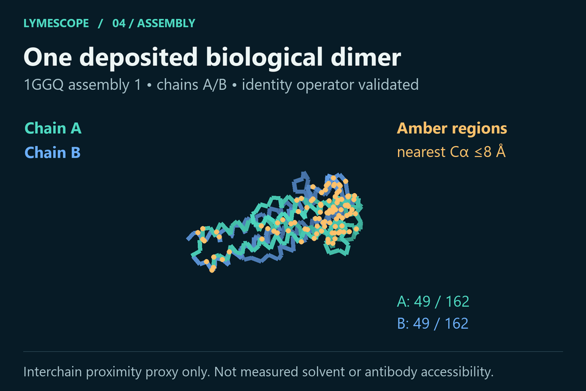

Chicago · November 15, 2026
Science reproduced across two NVIDIA GB10s.
VERIFIED · RESULTS READ BACKA real OspC panel. The same pinned AI model. Every original task accounted for across two physical machines.
Correctness reproduced; negative scaling measured in this single pilot.

Two independent scientific shards
Spark29 · NVIDIA GB10
3,156 masks · 403 forwardsShard 0/2 · 42.397 s warm scoring
CORRECTNESS PILOT PASSSpark30 · NVIDIA GB10
3,149 masks · 402 forwardsShard 1/2 · 16.233 s warm scoring
PRESERVED PILOT PASSScheduler node attribution agrees with the GPU inventory. Warm-scoring intervals overlap. The 210-residue pilots each used 27 scoring forwards; three warm-up and three validation forwards were counted separately.
The computation reproduced. This run took longer on two nodes.
| Measured scope | Single node | Two nodes |
|---|---|---|
| Warm scoring wall time | 30.224 s | 42.397 s · slower shard |
| Coordinator phase makespan | 52.111 s | 67.982 s |
Comparable prepared-input phases within one Fuzzball workflow: model loading, process startup, scoring, output writing and validation are included. Two workers were reserved throughout; Spark29 was idle during single-node science. Common staging and final export are reported separately. This is not a cold-launch end-to-end acceleration claim.
Timing and method limits
Shared runtime restoration: 29.062 s. Final object-export window: 6.542 s. Entire workflow, including preparation, Spark29 pilot, both benchmark arms and export: 224.698 s. Laptop transfer and hash readback: 4.054 s. Queue/dispatch cannot be separated precisely at subsecond resolution.
The frozen scorer is unchanged. A common timing wrapper records its warm-loop boundaries in both benchmark arms. Worker UTC timestamps establish recorded overlap; no independent clock calibration was performed. One matched comparison is a pilot, not a general scaling estimate.
Predictability is a measurement, not a clinical claim.
ESM-2 predicts each observed original residue after that residue alone is masked. The frozen 30-sequence alignment separately measures empirical agreement and coverage.
Neither result establishes antibody accessibility, antigen protection, diagnosis or vaccine safety. The earlier negative B11 diagnostic remains unchanged.
CIQ Fuzzball + NVIDIA GB10 + VAST-backed results
Persistent scientific inputs and outputs were hash-verified and read back to the laptop. The six-file model stayed in separate ephemeral storage. VAST identity is supported by onsite staff; no VAST throughput claim is made.
Archive accounting: 104 manifest-listed payload files + 2 checksum/manifest files = 106 regular files. No omissions.
Pinned ESM-2 8M · batch 8 · float32 · eager attention · TF32 disabled · no autocast.
Fixed tolerance: abs(candidate − reference) ≤ 1e-4 + 1e-5 × abs(reference). Maximum absolute and relative differences of saved scores: 0.
Workflow identity and provenance
79319e56-f368-4eba-8cae-7c646737b9fc
Both matched phases share this workflow ID. Physical Spark29 job: 3cb9809a-e25c-5aba-a112-48b6727f0a6d. Physical Spark30 job: 408e7d1c-34e5-5011-9610-a17e1ad551b5. Both exited 0. The previous Spark30 pilot was preserved, not rerun.